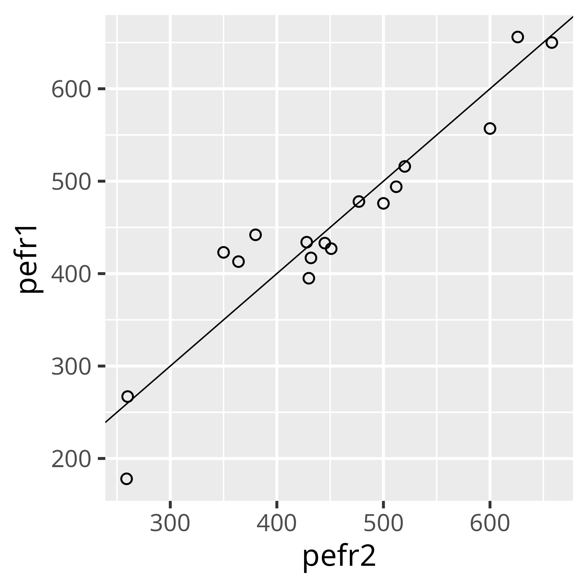

Assessing and comparing agreement among measurement instruments.
We sometimes need to evaluate whether a new instrument agrees with an existing one. Instrument is loosely meant as a measuring device such as a sensor or an online analyzer, but it could also be a person measuring or rating something. Therefore, we wish to quantify how much the two agree/disagree.
To learn more, the correct terminology is intra-observer variability
Correlation Coefficients
There exist correlation coefficients that have been developed for these tasks. However, a critique of using correlation coefficients is that: “a perfect correlation can result even when the measurements disagree by a factor of 10” (Harrell, 1987).
The intraclass correlation coefficient (ICC) is a common one used for these tasks. Others include Cohen’s kappa statistic, Concordance Correlation Coefficient.
See: https://hbiostat.org/bbr/obsvar
Bland-Altman Plot
A sensible visualization of the agreement between two measurements has been proposed by Bland and Altman. This happens to be the same as Tukey mean-difference plot. Bland and Altman develop this method to address the same shortcoming already pointed out earlier, namely, that “a high correlation does not necessarily imply that there is good agreement between the two methods”.
You can read the original paper here. Bland and Altman wrote in the Clinical Chemistry Journal (63:10 (2017)): “We certainly were not the first people to recognize that correlation coefficients did not assess agreement but rather association. Notably, we quoted Westgard and Hunt, who wrote wisely in Clinical Chemistry in 1973, “The correlation coefficient is of no practical use in the statistical analysis of comparison data”.”
A peak expiratory flow rate (PEFR). Credit: healthline
Here we illustrate the method using the authors original data on peak expiratory flow rate (PEFR) measures via two instruments: pefr1 and pefr2 on 17 subjects.
## Import data used by Bland and ALtman in original paperba <-read_csv("Data/bland-altman.csv")ba %>%kable(escape = T, format ="html", digits =1, align =rep("c", 5)) %>%kable_styling(bootstrap_options =c("striped", "hover", "responsive", "compact"), full_width = F)
Table 1: Original data on PEFR1 and PEFR2 measruments.
subject
pefr1
pefr2
1
494
512
2
395
430
3
516
520
4
434
428
5
476
500
6
557
600
7
413
364
8
442
380
9
650
658
10
433
445
11
417
432
12
656
626
13
267
260
14
478
477
15
178
259
16
423
350
17
427
451
For completeness, we show the estimated conventional correlation coefficient (i.e. Pearson) and the scatterplot, knowing that this (i.e. correlation) is not an appropriate way to analyze these data:
cor(ba$pefr1, ba$pefr2, method ="pearson")
[1] 0.9432794
As the authors write in the paper: “the high correlation of 0.94 for our own data conceals considerable lack of agreement between the two instruments”.
We want to know by how much the new method is likely to differ from the old. Ideally, we want to have a sense of the value beyond which we would say the two instruments are not in agreement. This is more a business decision than a data one, and needs to consider whether the difference between the two measurements is large enough to lead to a different decision.
Step 0
There is a zero step in which we need to ask the subject matter expert the following question: how different does the second measurement need to be from the first measurement in order for it to lead to a different decision with regard to its use? Do this without peeking at the data, as it would lead to a cognitive bias (anchoring).
Step 1
ba %>%ggplot(aes(x = pefr2, y = pefr1)) +geom_point(shape =1) +geom_abline(intercept =0, slope =1, size =0.25)

Figure 1: PEFR1 vs PEFR2. The first step is to examine one measurement vs. the other with a 1:1 line as a reference
We first plot the two methods against each other as shown in Figure 1. This is a good start, however, the points will be clustered around the identity line thus making it difficult to assess between-method differences.
Step 2
We next plot the differences between the measurements (on the y-axis), against the mean of the individual differences. We then add reference lines for the grand-mean of the differences, and +/- 2 standard deviation of the grand-mean. This is shown in Table 2 and Figure 2
ba %>%ggplot(aes(x = mean, y = diff)) +geom_point(shape =1, size =2) +scale_y_continuous(breaks =seq(-90, 90, by =20)) +geom_hline(yintercept = ba$diff_mean, size =0.5, linetype ="dotted") +geom_hline(yintercept = ba$diff_mean + ba$diff_sd *2, size =0.25) +geom_hline(yintercept = ba$diff_mean - ba$diff_sd *2, size =0.25) +geom_hline(yintercept =0, size =0.25) +annotate("text", y = ba$diff_mean -3.5, x =620, family ="Pragmata Pro Mono", size =3.6, label ="Mean of differences") +annotate("text", y = ba$diff_mean + ba$diff_sd *2+4, x =620, face ="italic", size =3.6, family ="Pragmata Pro Mono", label ="Mean + 2 SD") +annotate("text", y = ba$diff_mean - ba$diff_sd *2-4, x =620, face ="italic", size =3.6, family ="Pragmata Pro Mono", label ="Mean - 2 SD") +labs(x ="\nMean PEFR of two instruments (l/min)",y ="Difference in PEFR (PEFR1-PEFR2)" )
Figure 2: Bland-Altman plot of the difference between the measurements against the mean and sd.
Step 3: Interpretation
Let’s interpret Figure 2. There is considerable lack of agreement between PEFR1 and PEFR2 with discrepancies of up to 80 l/min. We see no obvious patterns in the plot. Because there is no pattern, we can summarize the lack of agreement by calculating the bias as the mean of the differences: -2.1 and a sd of 38.8.
An example of a pattern could be that the agreement gets better or worse at higher values of the x-axis. In this case, it would not make see to calculate the bias because that depends on the value of the mean.
ba %>%ggplot(aes(x = diff)) +geom_histogram(aes(y = ..density..), binwidth =2*IQR(ba$diff) /length(ba$diff)^(1/3), color ="white") +geom_density() +labs(y ="",x ="Difference (PEFR1-PEFR2)" )
Figure 3: Histogram of differences.
If the differences follow a normal distribution (something that would be expected), then we can infer that 95% of the differences would lie between +/- 2 standard deviations of the mean (1.96 to be precise). In any event, one can plot a histogram to get a sense of the distribution, as shown in Figure 3.
We then calculate the limits of agreement as shown in the graph as follows:
Now, refer back to step 0: if differences as large as +/-2sd are deemed of no practical importance by the subject matter experts, then, the two measurement methods could be used interchangeably. However, if differences as large as +/- 2sd are unacceptable, then the two measurement do not agree and the new meter (PEFR2), having differences of 80 l/min below, or 76 l/min above the old meter (PEFR1), is not acceptable.
Notes
If we see that the scatter in Figure 2 increases as the mean PEFR increases, we can try a log-transform, apply the analysis, and then back-transform the findings to the original scale.